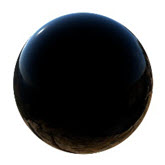

镜面反射 BRDF（双向反射分布函数）
本教程探讨 standard_surface 着色器中的各种镜面反射设置。
BRDF
双向反射分布函数 (BRDF) 通过指定从一个方向入射并相对于曲面法线反射到另一个方向的辐射量来描述曲面的反射特性。
一个物理上合理的 BRDF 的主要特征是入射和反射方向之间存在对称性（亥姆霍兹互异性），以及给定的入射辐射方向的总反射能量小于或等于入射光的能量（能量守恒）。
镜面反射 BRDF 模型依赖于视角，并可以将各向异性和掠射角的菲涅尔效应考虑进来。Arnold 使用 Cook-Torrance BRDF。
照射到曲面的光线称为入射光线，而照射的角度称为入射角（如下图所示）。反射回来的光能量必须小于或等于照射到曲面的光（我们无法“添加”光）。在曲面上，光线要么发生反射，要么发生折射，并且最终可能会被任意一侧的介质吸收。
入射角、入射光线和反射光线
法线方向的反射率(Reflectance at Normal)
菲涅尔效应以首先介绍它的法国物理学家 Augustin-Jean Fresnel 的名字命名。此效应指出，曲面的反射强度取决于观察视角。从掠射角度进行观察时，曲面上的反射量会增加。
当标准曲面着色器中的 IOR 大于 1 时，对象的反射将取决于视角，并依照菲涅尔方程发生变化。标准曲面着色器使用 Schlick 的菲涅尔方程近似法，并可使用材质的 IOR 进行控制。当值较低时，材质表现为完美的绝缘体，例如塑料。值越高，材质越接近于完美的导体或金属曲面。
|  |  |
所有材质都存在某种形式的菲涅尔现象，最常见的例子就是玻璃和水。下面的示例显示了一张木桌上的菲涅尔效应。请注意桌面上的倒影如何随着摄影机观察视角变浅而更具反射性。
镜面反射 BRDF 相对于视角方向发生的变化
在下面的示例中，使用 IOR 为立方体指定了一个 standard_surface 着色器。可以看到菲涅尔效应。当摄影机的观察视角变得越来越浅时，镜面反射的光泽倒影变得越来越亮。
微面曲面
Cook-Torrance 是一个基于微面模型的微面 BRDF（请参见“Microfacet Models for Refraction through Rough Surfaces”，作者 Walter, Marschner, Li 和 Torrance，Eurographics 2007 年）。
这些模型认为曲面并非完全平滑并且是由许多极小的平面组成，其中每个微小面都是完全的镜面反射体。
这些微面的法线围绕近似平滑的曲面的法线进行分布。微面法线与平滑曲面法线的偏差度取决于曲面的粗糙度。
下面的动画显示了曲面粗糙度如何影响镜面反射。
在下面的示例中可以看到，当曲面变得“凹凸不平”或“更加粗糙”时，镜面反射的影像会被拉伸。

各向异性和粗糙度
例如，沥青混凝土是一种各向异性材质。此效果在潮湿公路的路面上非常明显。要注意的是，潮湿路面的漫反射显示更暗，镜面反射显得更亮。当您远离路面时，地面上拉伸的各向异性反射更加明显。但是，当您靠近时，由于观察视角发生变化，拉伸的反射变得更小。各向异性高光的大小取决于观察视角。
干燥的漫反射路面与潮湿的各向异性路面
下面的示例动画显示了使用各向异性 (0, 0.5, 1) 时镜面反射粗糙度的效果。为了演示效果，这里通过动画展示了粗糙度值从 0 到 1 的效果。
各向异性值从左到右：0、0.5、1。
各向异性示例
下面的图像显示了在地板表面上使用和未使用各向异性时渲染效果的差异。两个着色器的粗糙度均设置为 0.2。
| 地板着色器各向异性：0 | 地板着色器各向异性：0.8 |